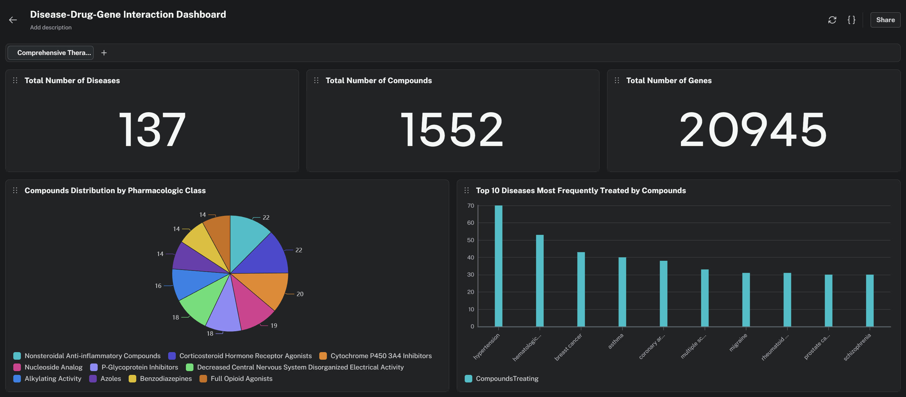
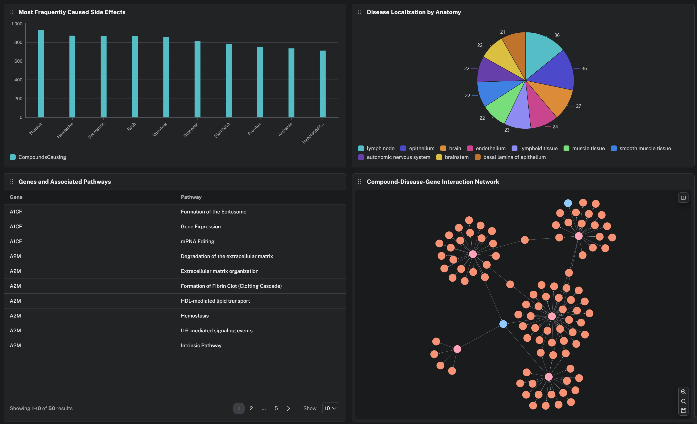

DrugPath reasons over a biomedical knowledge graph of 47,000 nodes. It traces the path from a drug through its genes and pathways to a disease — and surfaces repurposing hypotheses a flat database simply cannot express.
The same question, asked of two data structures. Only one can answer it.
"Why might metformin work against cancer?"
No answer.
Cancer isn't in metformin's indications column. The connection lives between rows of different tables — exactly what a join can't reach in one hop.
"Why might metformin work against cancer?"
Metformin binds SLC22A1 and mitochondrial Complex I genes; several of those genes are associated with prostate and stomach cancer. A plausible, traceable repurposing hypothesis — produced by one traversal.
Real responses, built from real queries run against the live Hetionet graph on Neo4j Aura. Pick a question.
↑ A scripted preview using genuine query output. The published Aura agent will answer live questions here.
Three Cypher templates plus a vector similarity search, exposed to the agent.
Finds the molecular targets and pathways two drugs share, to explain a plausible interaction mechanism — not just flag it.
Given a disease, surfaces drugs approved for other conditions whose targets associate with it. Pure graph reasoning.
A full pharmacological profile: indications, targets, pathways, side effects and drug class, assembled from relationships.
Vector similarity search over compound embeddings to find pharmacologically related drugs.
A public-domain (CC0) biomedical network integrating 29 databases — DrugBank, Reactome, DisGeNET, Gene Ontology, SIDER and more.

